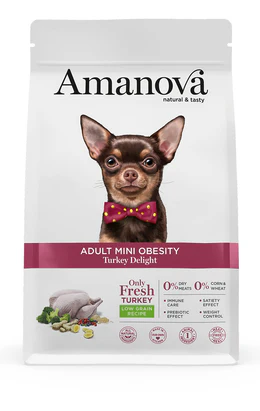
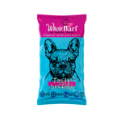
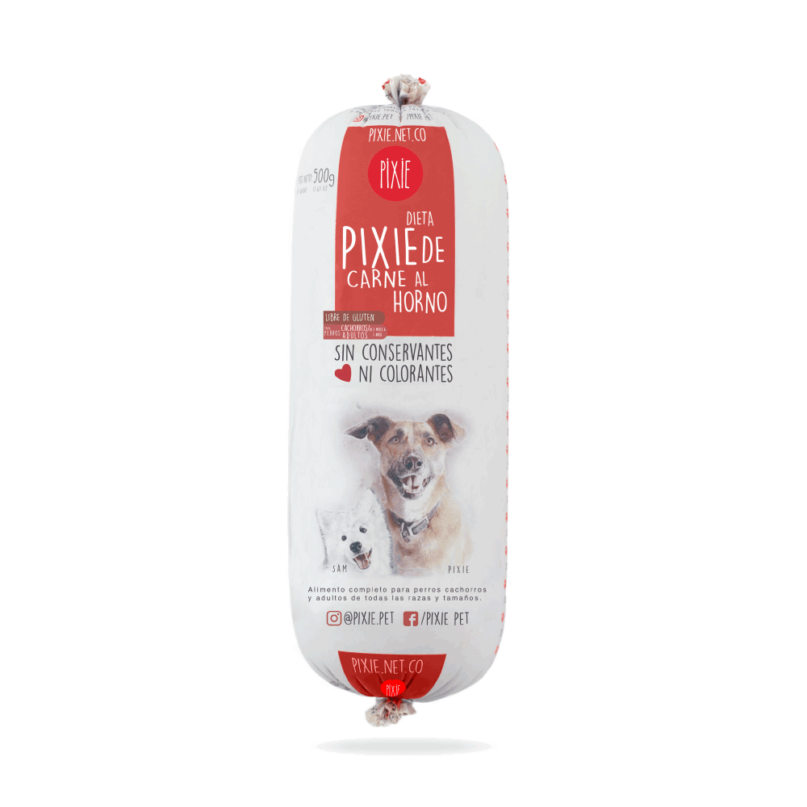
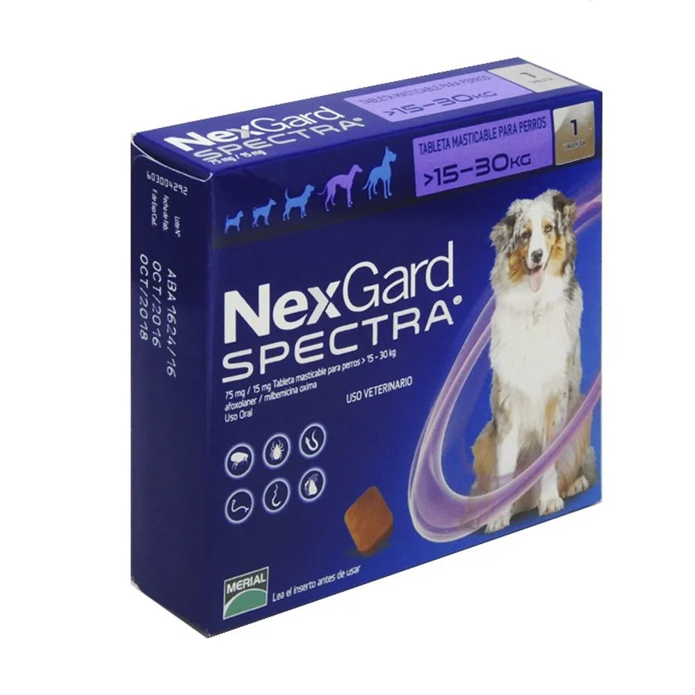

La alimentacion de un perro es la bse para poder vivir y dependiendo de ella, la salud del animal variara para bien o para mi.
Los perros en un principio eran carnivoros.Pertenecen a la especie canis familiris y estan incluidos en el grupo de los carnivoros,
donde tambien se encuentran los lobos, los osos, los gatos y otros muchos animales.
Pero desde que se hizo amigoo del hombre, ha cambiado sus habitos alimenticios. Ya no son unos carnivoros estrictos y su capacidad
metabolica ha cambiado, pero su alimentacion sigue siendo mayoritariamente de carne. Lo cierto es que el perro actual es
practicamente omnivoro.
Lo Basico
Dejando a un lado los nutrientes basicos necesarios para todo animal(agua, albumina, hidratos de carbono grasas y sales) son
tambien imprenscindibles las vitaminas. si el aporte de nutrientes y energia es inadecuado, la salud de nuestra mascota no sera buena.
y esta incorrecta alimentacion le provocara, tarde o temprano a nuestro perro la aparicion de patologias.
Hay que tener en cuenta que los mecanismos fisiologicos del perro y del hombre son parecidos, pero distintos. Hay algunos alimentos que el perro no es capaz o no puede metabolizar de la misma manera que
lo hace el hombre. Su matbolismo no es tan eficaz como el del ser humano. Sabiendo esto, se puede evitar cometer errores en la alimentacion.
Errores mas frecuentes
Muchos dueños no se fian de las dietas comerciales debido a que creen que sus componentes no son naturales. En vez de eso lo hacen es ppreparse ellos mismo las comidas,
pues creen que si a ellos les sienta bien, sus mascotas tambien, pero esto es erroneo. Como acabamos de decir en el apartado anterior, el metabolismo de los perros es diferente del de los humanos.

El problema no es alimentarles con alimentos frecos qu son buenos sino la cantidad y proporcion de nutrientes que les debemos suministrar y que los necesitan. los productos comerciales estan hechos por nutrientes y contienen la informacion sobre las cantidades adecuadas para cada perro. Los productos llmadas "Premium tienen este nombre por su mayor digestibilidad para los animales y evidentemente, por su mayor calidad.
Diferntes soluciones y consejos
Teniendo en cuenta todo esto, ya que podemos actuar de forma corrcta una vez. Una vez elegido el tipo de dieta que va a seguir, debemos asegurarnos de que sea mejor posible. Debe ser agradable al gusto del perro. Esto sera mas facil con los productos comerciales, como ya he dicho antes, pues viene detallado todos los elementos y las raciones a proporcionar a la mascota.
Es muy importante concientizar a todos los miembros de la familia en estabilizar u no cambiar la dieta alimentaria de la mascota. Lo aconsejable es darle de comer despues de que la familia haya comido para instaurar la dominancia en el dueño. Si se hace al reves , el perro comenzaria a tener comportamientos dominantes. El lugar donde se le debe poner el plato debe ser tranquilo. Nos debemos asegurar que no se lleva la comida a otro sitio y tampoco quitarsela a la mitad de la comida, pues provocara ansiedad en el perro, incluso agresividad.
Por ultimo y como es normal en caso de dudas es recomendables preguntar a nuestro veterianrio, que nos puede aconsejar en todo
momento de cualquier cuestion que nos surja. El sera el mejor para aconsejarnos a la hora de cambiar la dieta de nuestro perro, si queremos que adelgace
algunos kilitos o que engorde otros tantos.
Ventas de Productos de mascotas
Pavo fresco
Adult Mini Obesity Turkey Delight Wow Can Sabor Surtido - 30 Un
9000
Whole Barf
Alimento Crudo Para Perro Whole Barf Tasty Buffalo - 500 Gr
12000
Wow Can

Pack Alimento Húmedo Para Perro Wow Can Carne - 12 Un
190000
Pixie
Alimento Húmedo Para Perro Pixie Dieta De Carne De Res Al Horno - 500 Gr
49000
Pato, pollo y pavo

PUPPY FLAVOURS OF THE FARM
12000
Agility

Alimento Para Perro Agility Gold Pequeños Adultos - 1.5 Kg
19000
Desparacitante
Un desparacitante de perros que ayudara a eliminar las infecciones de tu mascota
20000